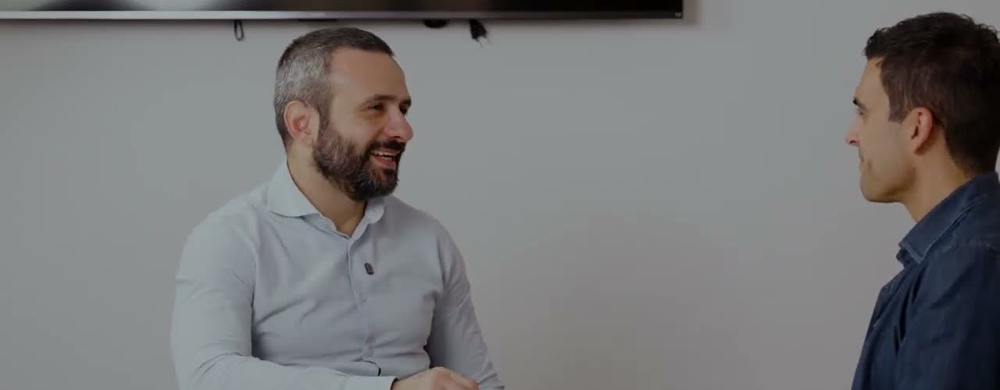

Finance
NiVi.
Prioritising incoming communications.
Generative AI in debt collection email workflows.

Client
NiVi
Service
Generative AI and classification
Source
Il Salotto di LAIF
The problem.
Handling large volumes of communications affects operators’ work and the service to users. NiVi was looking for a partner to tackle several processes, starting with those with the greatest impact.
The solution.
The first project covered here concerns categorising and prioritising incoming communications, especially email. Generative AI becomes part of the operational workflow to support request handling.
Choosing where to start.
Federico Nicosia explains choosing the email channel based on the expected impact on costs and service. The conversation also covers governance, privacy and spreading AI skills across the company.
The project, told together.
The full conversation with NiVi, from the official LAIF channel.
Facing a similar problem?
Tell us what you would like to change. We’ll define the first step together.
Let’s talk